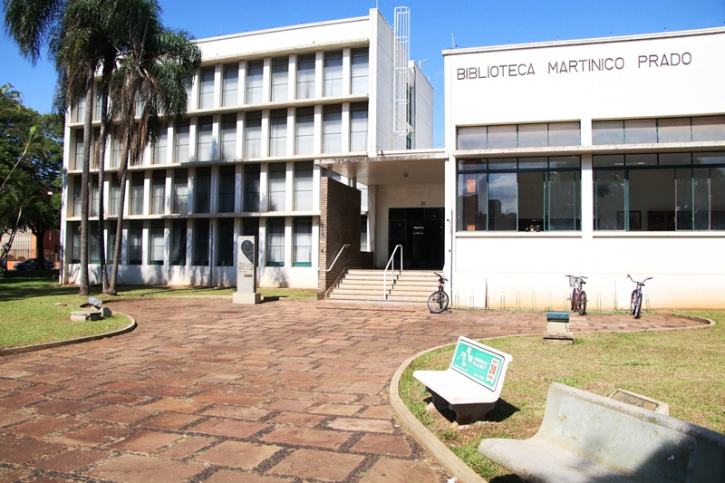
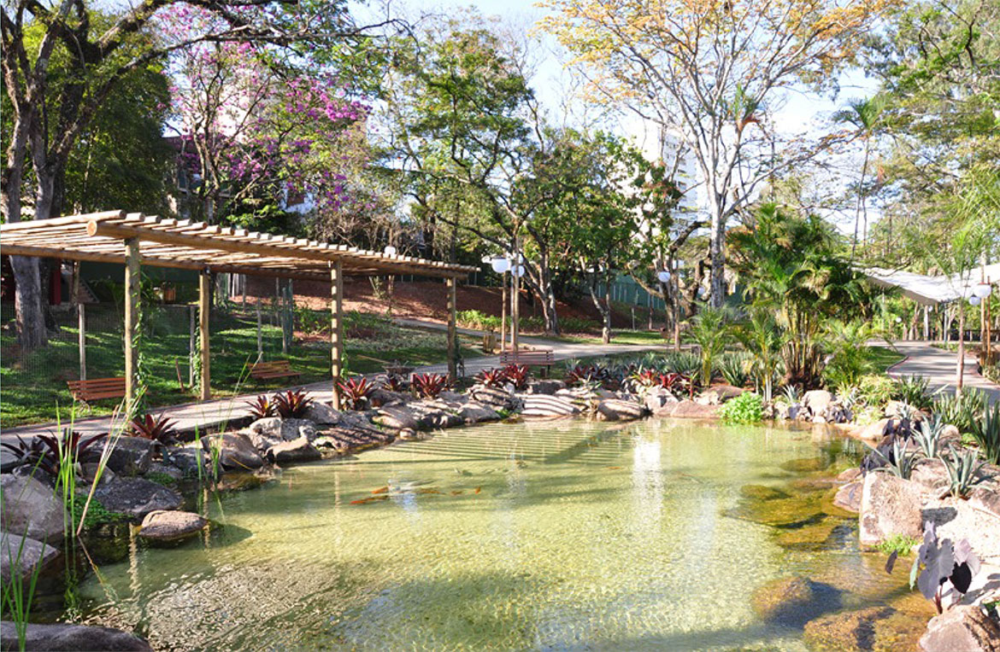
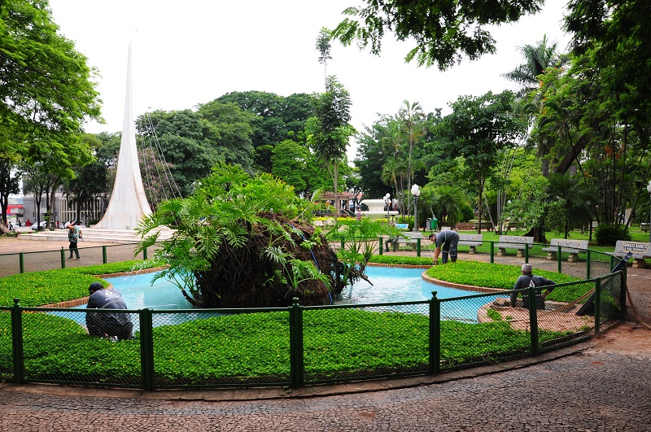

Minha araras, minha cidade.
a cidade encantamento

Construída na década de 1950, a biblioteca Municipal Martinico Prado tem este nome em homenagem ao pai de seu maior benfeitor e doador: Fábio da Silva Prado, ex-prefeito de São Paulo e ex-proprietário da Fazenda Santa Cruz, uma das mais importantes de Araras no Ciclo do Café.
A Biblioteca Municipal Martinico Prado é parte integrante da vida de dezenas de milhares de ararenses de diversas gerações. Em suas dependências, muitas crianças, jovens e adultos sempre vieram em busca de conhecimento e cultura. Além de possibilitar a pesquisa e o saber, e de oferecer ao cidadão acesso gratuito a importantes obras literárias de diversas épocas, a biblioteca abriga eventos culturais, tanto realizados pelo poder público quanto por outras instituições da esfera social.
a bibliote funciona de segunda a sexta das 08:00 as 16:45

Ocupando cerca de 89.000 m², o Parque Municipal Fábio da Silva Prado, popularmente conhecido por Lago Municipal de Araras, foi inaugurado em dezembro de 1963, pelo então Prefeito Milton Severino.
Atrações
O Parque possui diversas atrações, como playgrounds, pedalinhos, restaurante, ciclovia, coreto, área para exposições, feiras e shows.
Playground
Desde a inauguração até os dias de hoje, são dez tipos de playground (cama elástica, Casa do Tarzan, gaiolas, balanços) para as crianças brincarem.
Zoológico
O zoológico que abrigava diversos animais (urso, carneiro, onça parda, preta, pintada, camelo, cotia,leão, orix, macacos, jacarés, cobras, lagartos, gansos marrecos, cisnes, pavões, corujas, araras), foi desativado nos anos 90 por falta de estrutura adequada
Restaurante
Para atender os visitantes, foi construído um restaurante que é até hoje comandado pelo “Português”, José Manoel de Jesus Vieira.
Projeto “Rock no Lago”
Fazendo parte da programação do Festival de Outono, evento cultural com diversas atrações nos meses de abril e maio, o “Rock no Lago” é realizado nas tardes de domingo na Prainha do Lago Municipal, entretendo o público com músicas

Criada em 1894, conhecida como Jardim Público, localizada no Centro da cidade, a Praça Barão de Araras é um dos maiores Jardins Públicos do País, pois apresenta uma área de 40 mil metros quadrados. O tombamento inclui todo o contorno e seu conteúdo (monumentos, estátuas, lagos, árvores, fontes, coretos e bancos).
Histórico do município: O primeiro registro do povoado foi em 1818, através de uma sesmaria de légua e meia, formada pelas bacias hidrográficas do rio Mogi, ribeirão Itapura e ribeirão das Araras, em terras pertencentes ao município de Limeira. Em 1862, o proprietário da sesmaria erguia a primeira capela de Nossa Senhora do Patrocínio das Araras, rodeada de algumas casas. A inauguração foi em 15 de agosto de 1862, Dia da Padroeira.
Em maio de 1865, os então proprietários da sesmaria, Bento de Lacerda Guimarães (futuro Barão de Araras), e José de Lacerda Guimarães (Barão de Arary), doaram o terreno para o patrimônio da respectiva igreja dedicada a Nossa Senhora do Patrocínio.
Em 24 de março de 1871, o povoado de Nossa Senhora do Patrocínio foi elevado à categoria de vila, passando a partir daquele momento a constituir um município, que já possuía cinco mil habitantes. A primeira eleição de vereadores foi em 07 de setembro de 1872. O município foi instalado em 07 de janeiro de 1873, com a constituição da 1ª Câmara Municipal e em 02 de abril de 1879 foi elevada à categoria de cidade.
A imigração foi grande influenciadora na formação da população de Araras. Com o ciclo do café, italianos, portugueses, suíços e alemães se incorporaram à vida econômica que vinha sofrendo prejuízo com a falta de mão de obra na lavoura devido à abolição da escravatura.
Bento de Lacerda Guimarães e Jose de Lacerda Guimarães, Fundadores de Araras eram filhos de Antonio de Lacerda Guimarães e Maria Franco, lavradores em Belém de Jundiaí, hoje Itatiba.
Em dezembro de 1847, os irmãos contraíram matrimonio, o primeiro com Manoela Assis de Cássia, e o segundo com Clara Miquelina de Jesus, filhas de Alferes Franco, possuidor de uma das maiores fortunas da época e que, parte de seu patrimônio localizava-se em Araras.
Após o casamento os irmãos concretizaram a sociedade Lacerda & Irmãos cujo objetivo principal era a cultura de café, nos sítios Montevidéu (hoje Fazenda Montevidéu) e Bocaina.